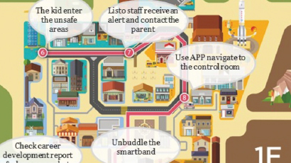

To deliver a complete O2O experience and increase visitor’s interest and participation PwC designed and implemented a unique customer experience with
a diverse range of technologies (e.g. iBeacons, smart bands) to streamline regular activities, such as ticket reservation, shopping, sharing data on social media,
and also address and derive innovation with existing pain points such as the ability to track the location of their child, providing routing guidance to a desired location from their svmart phone.
iBeacons, smart bands) to streamline regular activities, such as ticket reservation, shopping, sharing data on social media, and also address and derive innovation.
-
Defined functionalities, vendor selection for smart devices (Smartband, KIOSK, etc.) to fulfill the O2O experience.
-

Online and offline customer journey based on different customer personas.
-
Offered an end to end digital solution from design to implementation.